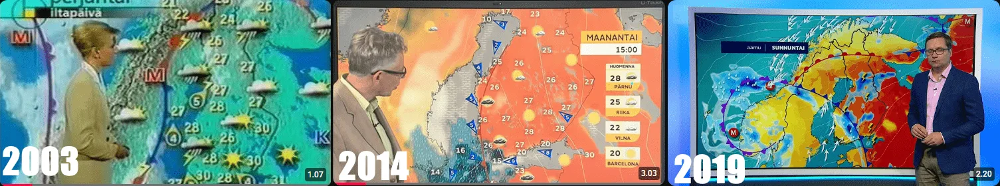

Lyhyesti
- Sääkarttojen väriasteikot ovat siirtyneet parissa vuosikymmenessä vihreästä ja sinisestä kohti oranssia ja punaista.
- Värit vaikuttavat siihen, miten lämpötila koetaan: punainen tuntuu kuumalta ja vaaralliselta jo ennen kuin luet numeron.
- Ongelma syntyy, kun lämpötilakartan värit sekoittuvat varoitusjärjestelmän logiikkaan ja tavallinen kesäpäivä näyttää hälytykseltä.
- Voit verrata vanhoja ja uusia karttoja itse Wayback Machinen ja YouTuben avulla.
Katso 2000-luvun alun säälähetystä ja tämän päivän säälähetystä rinnakkain. Huomaat muutoksen, joka on tapahtunut niin hitaasti, että se on livahtanut ohi lähes huomaamatta: värit ovat vaihtuneet.
Ennen kartta oli rauhallinen, vihertävä ja sinertävä, ja keltainen tarkoitti lämmintä kesäpäivää. Nyt sama 22 asteen kesäpäivä näkyy kirkkaan keltaisena tai punaisena. 28 astetta on tummanpunainen, joka muistuttaa varoitusvaloa.
Tämä ei ole pieni kosmeettinen muutos. Se muuttaa psykologista viestiä, jonka säälähetys lähettää sinulle joka päivä. Koska muutos tapahtui vuosien mittaan eikä yhdessä yössä, harvalla on vertailukohtaa siihen, miltä sama lämpötila näytti kartalla 10 tai 20 vuotta sitten. Kukaan ei ilmoittanut muutoksesta. Se tapahtui hiljalleen, ja sinä totuit siihen.
Mikä muuttui ja milloin
BBC muutti sääkarttojensa väriasteikkoa vaiheittain 2010-luvun lopulta alkaen. Keväällä 2024 siitä nousi Britanniassa julkinen kohu. Kävi ilmi, että jo noin 11 asteen lukemat näkyivät kirkkaan keltaisina, ja asteikon yläpää hehkui tummanpunaisena. Kolumnisti Ross Clark kuvasi karttoja ilmastopropagandan välineeksi. BBC puolestaan perusteli asteikkoa sillä, että se palvelee värisokeita katsojia ja kuvaa Euroopan muuttunutta ilmastoa.
Sama muutos on tapahtunut eri tahtiin ympäri maailmaa. Ranskassa, Saksassa, Alankomaissa ja Suomessa sääpalvelut ovat siirtyneet kohti punaisempaa asteikkoa. Kun Ilmatieteen laitoksen ja Ylen nykykarttoja vertaa vuosituhannen vaihteen karttoihin, ilmiö on sama. Neutraalit vihreät ja siniset ovat väistyneet, ja lämpimät värit hallitsevat myös lämpötiloissa, jotka ovat Suomessa täysin tavallisia.

Lähde: 2003, YLE sää | 2014, YLE sää | 2019, YLE sää. Huomaatko muutoksen? Rauhallinen sääkartta on muuttunut dramaattisemmaksi ja vaaraa korostavaksi.
Mitä tutkimus sanoo värien psykologiasta
Tässä asia muuttuu kiinnostavaksi, koska psykologialla on tähän selkeä vastaus, ja ilmiöllä on oma nimensä: sävylämpöhypoteesi (hue-heat hypothesis). Sitä on tutkittu vuosikymmeniä. Vuonna 2024 julkaistussa yliopistotutkimuksessa mitattiin, kuinka lämpimiltä eri värit tuntuvat. Asteikolla −5 (kylmin) … +5 (lämpimin) punainen sai arvon +3,75, keltainen +2,1, vihreä +1,09 ja sininen −1,87. Mitä kirkkaampi ja voimakkaampi väri, sitä kuumemmalta se tuntuu – riippumatta siitä, mitä numero kartalla sanoo.
Voit siis lukea kartalta 22 astetta, mutta punaoranssi väri saa sen tuntumaan kuumemmalta kuin sama 22 astetta vihreällä. Tätä ei kuitata sillä, että katsoja vain lukee numeron. Aivot käsittelevät värin ja numeron rinnakkain, ja värin tunnelataus vaikuttaa siihen, miten numero tulkitaan.
Tätä hyödyntävät kaikki hätäviranomaiset, liikennesuunnittelijat ja teollisuuden varoitusjärjestelmät. Punainen tarkoittaa vaaraa, vihreä normaalia. Koodaus on niin syvällä, että se toimii ennen kuin ehdit ajatella.
Miksi tämä korostuu Suomessa
Suomen ja Välimeren ilmastot ovat hyvin erilaiset. Jos Lontoossa ja Roomassa käytetään samaa väriasteikkoa, 28 astetta näyttää samalta molemmissa, vaikka Roomassa se on tavallinen kesäpäivä ja Lontoossa poikkeuksellinen helle.
Suomessa ongelma on vielä konkreettisempi. 25 astetta Helsingissä on mukava kesäpäivä, joka ei vaadi terveeltä ihmiseltä mitään erityistä. 32 astetta taas on aidosti poikkeuksellinen ja voi olla vaarallinen ikääntyneille, pikkulapsille ja pitkäaikaissairaille. Jos 25 astetta näkyy tummanoranssina ja 32 astetta syvänpunaisena, katsoja ei saa oikeaa kuvaa siitä, mikä on normaalia ja mikä poikkeuksellista.
Tutkijat ovat varoittaneet tästä
Birgit Schneider ja Thomas Nocke esittivät jo vuonna 2018 kirjoituksessaan The Feeling of Red and Blue, ettei ilmastoviestinnän punainen ja sininen vain kuvaa lämpötilaa. Ne lataavat siihen arvoja: punainen on pahaa, sininen hyvää.
Fabio Crameri kollegoineen kritisoi vuonna 2020 Nature Communications -lehdessä värien väärinkäyttöä tiedeviestinnässä. Heidän mukaansa huonosti valitut väriasteikot vääristävät datan lukemista: ne luovat rajoja ja korostuksia, joita datassa ei ole, ja sulkevat värisokeat ulos. Sama pätee sääkarttaan. Väriasteikko ei ole neutraali tausta vaan osa viestiä.
Ilmatieteen laitoksen varoitusjärjestelmässä on selkeä logiikka: vihreä tarkoittaa, ettei varoituksia ole, keltainen kohonnutta riskiä, oranssi vakavaa ja punainen erittäin vakavaa vaaraa. Ongelma syntyy, kun tämä varoituslogiikka sekoittuu lämpötilakartan asteikkoon. Silloin punainen alkaa tarkoittaa yhtä aikaa korkeaa lämpötilaa ja vaaraa – vaikka 28 asteen heinäkuun päivä ei ole vaaraksi terveelle suomalaiselle.

Näin teet vertailun itse: vanhat sääkartat löytyvät verkkoarkistosta
Paras tapa vakuuttua eron suuruudesta on katsoa se omin silmin sen sijaan, että luottaisit tutkimusten kuvauksiin. Tarvitset Wayback Machinen eli internetin verkkoarkiston osoitteessa web.archive.org. Se on ilmainen, julkinen eikä vaadi rekisteröitymistä.
- Mene osoitteeseen web.archive.org, kirjoita hakukenttään yle.fi/saa ja paina Enter.
- Sivusto näyttää aikajanan. Jokainen piste on tallenne, jolloin arkisto on ottanut sivustosta tilannekuvan.
- Valitse vuosi 2006 tai 2007. Näet kalenterin, josta selviää, minä päivinä tallenteita on.
- Valitse päivä heinäkuulta, mieluiten tyypillinen suomalainen kesäpäivä (20–27 astetta). Näet Ylen sääkartan sen päivän alkuperäisillä väreillä.
- Avaa toiseen välilehteen nykyinen yle.fi/saa päivänä, jolloin lämpötila on samaa luokkaa. Vertaa, miltä sama 23 tai 25 astetta näyttää vuonna 2006 ja nyt.
Ero on konkreettisempi kuin mikään tutkimus pystyy selittämään: sama suomalainen kesälämpötila, eri väri, eri tunne.
Sama haku toimii osoitteella foreca.fi. Foreca on monella tapaa parempi vertailukohta kuin Yle, koska se on näyttänyt lämpötilakarttoja jatkuvasti koko 2000-luvun eikä ole uudistanut ulkoasuaan yhtä rajusti. Wayback Machinesta löytyy Forecan karttoja aivan 2000-luvun alusta, joten näet, miltä Suomen lämpötilakartta näytti ennen nykyistä väriajattelua. Haku ilmatieteenlaitos.fi näyttää myös, miten Ilmatieteen laitoksen oma karttagrafiikka on muuttunut.
Jos verkkoarkisto tuntuu tekniseltä, hae YouTubesta esimerkiksi hakusanoilla YLE säälähetys vanha tai TV1 säälähetys 2005. Sieltä löytyy arkistoituja lähetyksiä, joissa meteorologi esittelee kartan alkuperäisillä väreillä. Ero näkyy muutamassa sekunnissa.
Propagandaa vai rehellistä kuvaamista? Vastaus ei ole yksinkertainen
Tässä kannattaa olla rehellinen molempien näkökantojen vahvuuksista eikä hypätä suoraan kumpaankaan leiriin. Molemmilla puolilla on oikeita argumentteja, ja yksinkertaistaminen tekee vääryyttä sekä aiheelle että lukijalle – kuten kerroin lokerointia käsittelevässä artikkelissani.
Värimuutoksen puolustajat
Ilmatieteen laitoksen mukaan Suomen keskilämpötila on noussut 1800-luvun puolivälistä yli kaksi astetta. Hellejaksot yleistyvät ja pitenevät, ja yli 30 asteen päiviä on viime vuosina ollut aiempaa useammin. Jos aiemmin poikkeukselliset lämpötilat muuttuvat normaaleiksi, on perusteltua väittää, että myös värimaailman pitää vastata uutta todellisuutta.
Värimuutoksen kriitikot
Asteikon pitäisi kuvata absoluuttisia lämpötiloja johdonmukaisesti eikä muuttua sen mukaan, mitä katsojan halutaan tuntevan. Kun BBC näyttää 11 astetta kirkkaan keltaisena, se ei vain kerro, että tänään on lämmintä. Se lataa tavalliseen syyspäivään tunnelatauksen, jota data ei tue. Lokakuinen 11 astetta Lontoossa on normaalia eikä vaadi keneltäkään mitään. Kirkas keltainen kuitenkin herättää automaattisesti varovaisuuden.
Tutkimusta myös toiseen suuntaan
Italialaistutkijoiden vuonna 2023 julkaistun tutkimuksen mukaan ihmiset tulkitsivat ilmastodataa oikein väriasteikosta riippumatta, eikä värimuutos yksinään muuttanut heidän käsityksiään ilmastonmuutoksesta. Tämä viittaa siihen, että psykologinen vaikutus on todellinen mutta ei niin suuri kuin puolustajat ja kriitikot antavat ymmärtää. Ihmiset osaavat tulkita dataa kriittisemmin kuin kumpikaan leiri haluaa myöntää.
Johtopäätös: värit eivät ole neutraaleja
Todennäköisesti molemmat asiat ovat totta yhtä aikaa. Värit vaikuttavat psykologisesti, ja ilmastonmuutos on todellinen. Sääpalveluiden tekijät tasapainoilevat näiden kahden välillä tavalla, joka ei aina ole katsojalle läpinäkyvää.
Läpinäkyvää olisi kertoa selvästi, mikä on absoluuttinen lämpötila ja mikä poikkeama historiallisesta keskiarvosta. Värien pitäisi kuvata johdonmukaisesti jompaakumpaa – ei sekoittaa niitä niin, että raja normaalin ja poikkeuksellisen välillä hämärtyy.
Johtopäätös ei ole, että sääpalvelut valehtelisivat tai että ilmastonmuutos olisi keksitty. Johtopäätös on, etteivät värit ole neutraaleja eivätkä asteikot mielivaltaisia. Ne ovat viestintäpäätöksiä, joilla on psykologinen vaikutus riippumatta siitä, mitä lukema kertoo.
Mitä teet tänään
Kun säälähetys seuraavan kerran näyttää tavallisen kesäpäivän punaisena tai tummanoranssina, pysähdy ja kysy:
- Onko tämä lämpötila oikeasti poikkeuksellinen – vai onko väri asteikon päässä vain siksi, että asteikko on suunniteltu niin?
- Miltä sama 25 astetta tuntuisi, jos se näytettäisiin neutraalilla vihreällä eikä oranssilla, joka on puolen askeleen päässä vaaran punaisesta?
- Mitä numero sanoo, jos unohdat värin?
Psykologian mukaan kokemuksesi muuttuisi. Väri vaikuttaa tunteeseen jo ennen kuin luet numeron. Säälähetysten tekijät tietävät tämän yhtä hyvin kuin psykologit.